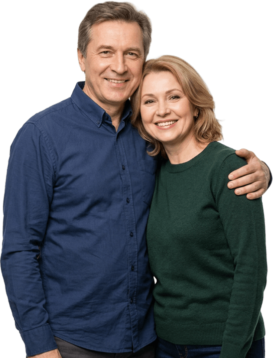
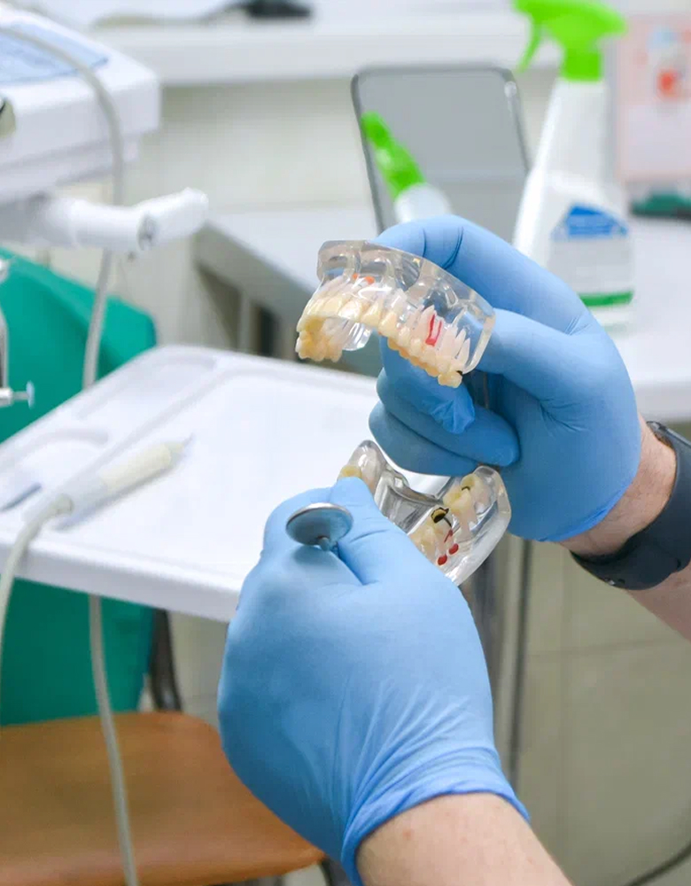
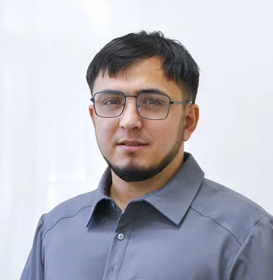
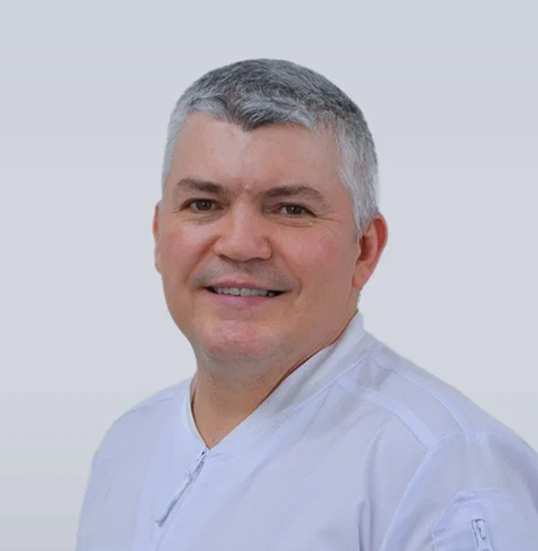
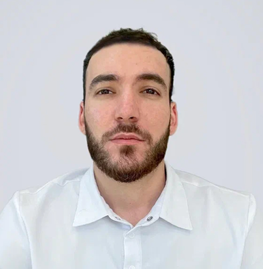
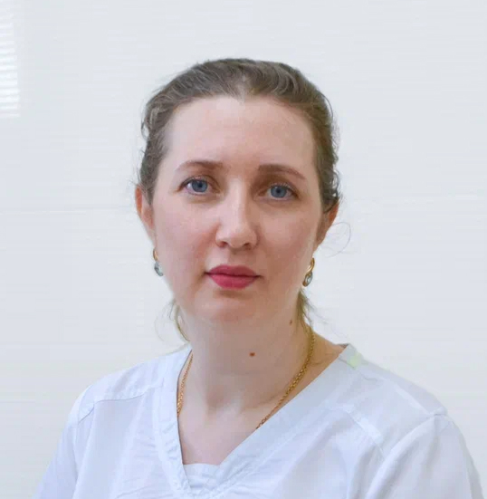

Нет всех зубов
На одной или обеих челюстях.
Современные протезы возвращают не только зубы — они возвращают возможность спокойно есть, говорить и улыбаться. Подберём решение под вашу ситуацию и бюджет.

Есть несколько сценариев, в которых это разумное, быстрое и финансово комфортное решение. На консультации врач посмотрит, что можно сохранить, и предложит варианты без навязывания имплантации.
На одной или обеих челюстях.
По здоровью, возрасту или бюджету.

Современный протез — это не громоздкая конструкция «из прошлого». Он может быть тоньше, легче и естественнее, чем многие представляют.
Врач подбирает конструкцию под вашу анатомию, объясняет период привыкания и приглашает на коррекцию, если что-то давит или натирает.
«Задача не просто поставить протез. Задача — чтобы с ним можно было нормально жить».
Точный материал и конструкция выбираются после осмотра. Здесь — логика выбора простым языком.
Когда зубов на челюсти совсем не осталось. Доступное решение, которое помогает восстановить жевание и внешний вид.
Acry Free может подойти, если важны меньший вес и эстетика или есть чувствительность к классическому акрилу.
Тонкая металлическая дуга делает конструкцию прочнее и помогает уменьшить объём протеза во рту.
Металлические крючки крепятся за свои зубы. Функционально, но иногда заметно при широкой улыбке.
Крепления спрятаны внутри коронок. Протез держится стабильнее, но опорные зубы требуют подготовки.
Подготовка проходит под местной анестезией. Снятие слепков и примерки сами по себе безболезненны.
→Современные материалы легче и аккуратнее, а конструкцию подгоняют по вашей анатомии.
→Обычно от первого визита до готового протеза проходит около 2–3 недель.
→Вся логика лечения на одной линии — без ощущения «непонятного процесса».
Врач смотрит ситуацию, объясняет варианты и называет ориентир по стоимости.
Если нужно — лечим воспаления, удаляем разрушенные зубы, готовим опорные.
Безболезненный этап, обычно один визит.
Чаще 1–2 недели, для отдельных конструкций — до 2–3 недель.
Проверяем фиксацию, речь, смыкание и комфорт.
Показываем уход и остаёмся на связи для коррекции.
обычно от первого визита до готового протеза
гарантия на работу
может служить съёмный протез при правильном уходе
ориентир для бюгельного протеза
Цена зависит от конструкции, материала и подготовки полости рта. Точную сумму фиксируем после осмотра.
Бюгельный протез рассчитывается индивидуально после выбора типа фиксации.
Специалисты клиники, которые ведут приём и сопровождают лечение.

Диагностика, план протезирования и подбор конструкции.

Подготовка полости рта и сопровождение лечения.

Лечение и подготовка к ортопедическому этапу.

Контроль адаптации и профилактические осмотры.
Хочу поблагодарить клинику. Долго откладывала протезирование, а в итоге всё оказалось гораздо спокойнее, чем представляла.
Мне подробно объяснили варианты и не убеждали брать самый дорогой. Протез подогнали, после коррекции стало очень удобно.
Наконец могу нормально есть и не думать постоянно о зубах. Отдельно спасибо за спокойное отношение и понятные объяснения.
Тексты отзывов в прототипе — демонстрационная компоновка; при интеграции подключаются реальные отзывы из текущего WordPress.
Без медицинской энциклопедии — только ответы, которые нужны перед первым визитом.
В первые дни возможен небольшой дискомфорт. Если протез натирает или болит дольше обычного периода адаптации — приходите на коррекцию.
Чаще всего 2–4 недели. Речь и жевание постепенно адаптируются к новой конструкции.
Обычные съёмные протезы чаще снимают на ночь. Для бюгельных конструкций режим обсуждают индивидуально с врачом.
Чистить мягкой щёткой, промывать после еды и соблюдать рекомендации врача по хранению и растворам.
Со временем ткани меняются — это нормально. Поможет коррекция или перебазировка.
Он тоньше и прочнее за счёт металлической дуги, меньше закрывает нёбо и часто стабильнее фиксируется.
Врач посмотрит, какие зубы можно сохранить, какой протез подойдёт и сколько это будет стоить.
Пн–Пт: 9:00–18:00
Сб: 9:00–15:00 · Вс: выходной
Пн–Пт: 9:00–18:00
Сб: 9:00–15:00 · Вс: выходной